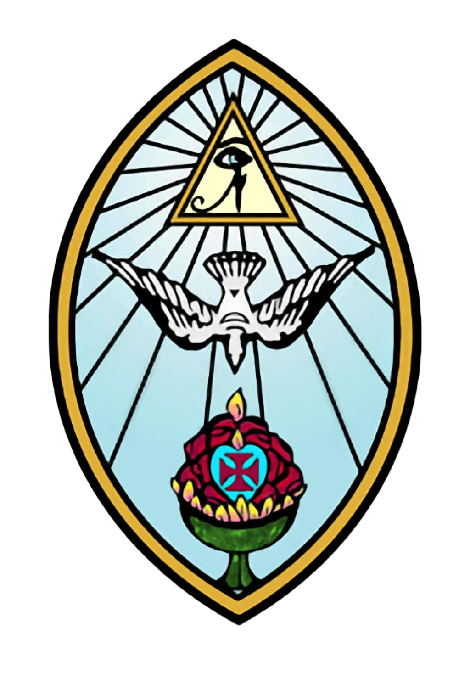
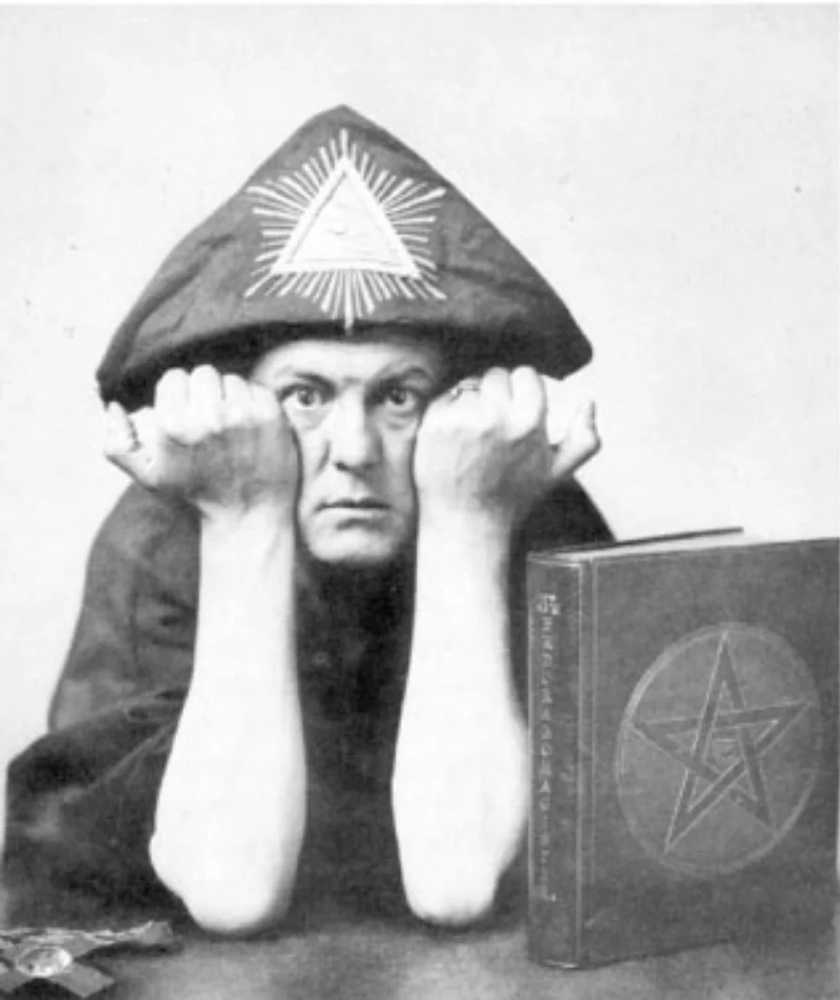
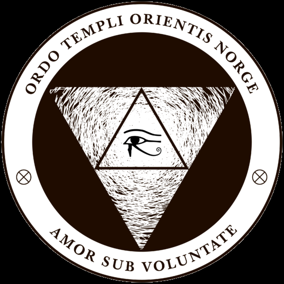
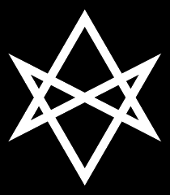
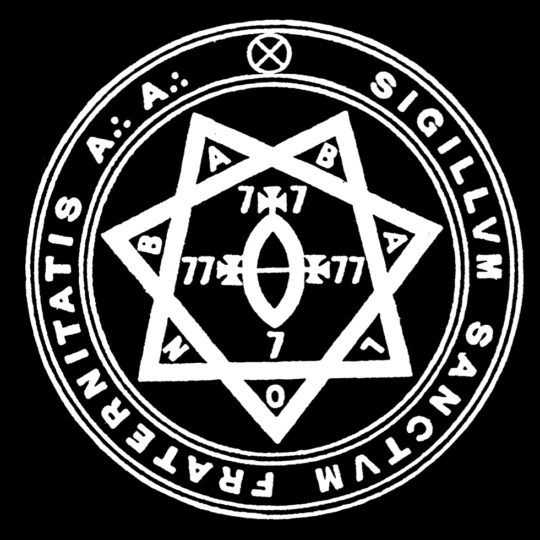

OTO
Ordo Templi Orientis (O.T.O.) er en internasjonal esoterisk orden med røtter i Tyskland tidlig på 1900-tallet. Ordenen ble opprinnelig inspirert av okkulte tradisjoner og frimureri, men ble fra midten av århundret sterkt preget av den britiske okkultisten Aleister Crowley. Det var Crowley som reorganiserte ordenen i forbindelse med utviklingen av det religiøse og filosofiske systemet Thelema, og som dermed ga O.T.O. dens nåværende identitet. Den norske grenen, Ordo Templi Orientis Norge, ble etablert 23. januar 1981 som en del av den internasjonale ordenen og er i dag anerkjent som et trossamfunn. Per nå har O.T.O. Norge omkring 100 medlemmer totalt, hvorav cirka 20 er tilknyttet avdelingen i Trondheim.

THELEMA
Det filosofiske og religiøse fundamentet for O.T.O. er Thelema, slik systemet ble formulert av Crowley. Hovedprinsippet uttrykkes i setningen «Do what thou wilt shall be the whole of the law». Dette skal imidlertid ikke forstås som en oppfordring til vilkårlig selvrealisering, men som et imperativ om å oppdage og virkeliggjøre sin sanne vilje (True Will). Crowleys definisjon av magick som «the Science and Art of causing Change to occur in conformity with Will» viser at praksisen er rettet mot å bringe individet i samsvar med sin dypeste natur, snarere enn mot ytre maktutøvelse. Sentralt står ideen om at hvert individ har en unik plass i kosmos, formulert i utsagnet «Every man and every woman is a star». Målet er ikke å oppløse individet i en større helhet, men å realisere dets særegne natur og funksjon. Et viktig begrep i denne sammenhengen er kunnskap om og samtale med den hellige skytsengel (Holy Guardian Angel), som forstås som en direkte erfaring av individets sanne natur. Filosofien legger dermed vekt på personlig frihet og ansvar: mennesket må selv skape mening i tilværelsen og frigjøre seg fra ytre autoriteter. Denne grunnholdningen forklarer hvorfor O.T.O. ikke driver aktiv misjonering. Tanken er at alle mennesker allerede følger sin vilje, enten bevisst eller ubevisst, og at ordenen først og fremst fungerer som et tilbud for dem som søker bevisst refleksjon rundt eget liv.

O.T.O I NORGE
I Norge består O.T.O. av både åpne og lukkede aktiviteter. De åpne organiseres gjennom Ecclesia Gnostica Catholica (E.G.C.), som forvalter seremonier og religiøse handlinger, mens den lukkede delen — Mysteria Mystica Maxima (M∴M∴M∴) — står for gradssystemet og rituelle innvielser. Innvielsene utgjør kjerneaktiviteten i ordenen og fungerer som symbolske prosesser hvor medlemmene reflekterer over eksistensielle temaer som liv, død og menneskets plass i verden. Som organisasjon har O.T.O. relativt lav terskel for medlemskap. Prosessen innebærer kontakt med lokale representanter, anbefaling fra eksisterende medlemmer, og en innledende grad — Minerval — hvor man kan utforske om ordenen passer for en selv. I Trondheim finnes det en mindre, men stabil gruppe, med aktiviteter som innvielser, studiegrupper og uformelle sammenkomster. For mange starter interessen i populærkulturelle uttrykk, men det som gjør at medlemmer blir værende, er som regel Thelemas etiske system og livssyn.

Ritualpraksis
I O.T.O. og Thelema forstås ritualer primært som metoder for indre transformasjon og selvinnsikt, knyttet til ideen om å virkeliggjøre sin True Will. Ordenens struktur er bygget rundt et gradssystem der hvert innvielsesritual markerer et nytt stadium, og initiasjonene fungerer som symbolske dramatiseringer av død, gjenfødelse og overgang fra uvitenhet til innsikt. Det sentrale kollektive ritualet er den gnostiske messen (Liber XV), som fungerer som en religiøs liturgi innenfor thelemisk tradisjon. Ved siden av det kollektive arbeidet legger Thelema stor vekt på individuell, daglig praksis. Meditasjon, føring av magisk dagbok, og arbeid med symbolsystemer som kabbala og tarot. Ritualene har dermed flere overlappende funksjoner: de er metoder for kunnskap, progresjon, kontakt og fellesskap.

Organisering og struktur
O.T.O. er bygd opp med en klar hierarkisk struktur. På toppen står Outer Head of the Order (O.H.O.), som leder hele trossamfunnet og utnevner nasjonale ledere. På nasjonalt nivå er X° (National Grand Master General) den øverste lederen, støttet av et nasjonalt styre. På lokalt nivå organiseres aktiviteten i loger, oaser og leirer, avhengig av størrelse. Parallelt finnes en kirkelig gren, Ecclesia Gnostica Catholica, som overlapper med ordensstrukturen. Ofte har samme person både en ordensgrad og en kirkelig rolle. Medlemmenes plassering reguleres gjennom et gradssystem med ti grader fordelt på tre kategorier. Man of Earth (grad 0–IV) legger vekt på indre arbeid og personlig utvikling, fra Minerval-graden som markerer starten på den indre reisen, til grad IV der medlemmet skal ha oppnådd en grunnforståelse av True Will. Lover (grad V–VII) representerer et skifte til aktivt ansvar i ordenen, mens Hermit (grad VIII–X) er forbeholdt et lite antall personer. Gradene representerer ikke primært makt eller status, men individuell progresjon og økende ansvar.
